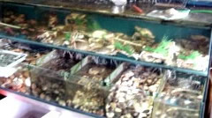

Yuancyuan Seafood Restaurant
Owner: Yuan-Cyuan Huang
Address: No.173 1st Section coastal Rd Yu-Pu village Hsien-Hsi Town
Phone Number: 7581833, 7580613,7987385
Opening Hour: AM10:00-PM2: 30, PM5:00-PM9:00
Introduction:
A big tank is what you can see when you enter the restaurant. There are ells, clams, raninidaes, razor clams, mud shrimps in it, and these are the important ingredients for cooking. All the seafood is fresh and there isn’t actually a menu in the store. Customers choose the seafood that they want to eat and they can ask to cook them directly. The special dish in this restaurant is the steamed trout. Ells and shark fins are popular, too.
Eels are eaten in two ways, one is in soup and the other is in three cups of seasoning including sugar, soy sauce and sesame oil. It’s simple to make ell soup. What you need to do is to cut eels into pieces, and boil them with water. It’s more complicated to do it in the way of three cups. First, fry the eel to crispen it. Then, put ginger, garlic, soy sauce, sugar, sesame oil, plum wine into the soup and boil for half an hour.
Mr. Huang said other restaurants cook eels with the Shaosing wine, which makes the flavor sour. However, he uses plum wine as substitute, and it makes the soup sweet.
There are also two ways to cook shark fins, with soup and the fragrant flower. The first step to cook shark fin soup is to put then in water for a while, and then fry them with dried bamboo shoots, parsley, garlic, and egg. Add some sesame oil as seasoning. All steps above make a wonderful dish.
|
 |
The seafood is displayed in front of the door. |
 |
Take a picture with the owner and his wife. |
|
 |
| The inner decoration of Yuancyuan Seafood Restaurant |
|
|
| Many famous people visited here before |
|
 |
| The specialties of Yuancyuan Seafood Restaurant |
|
|